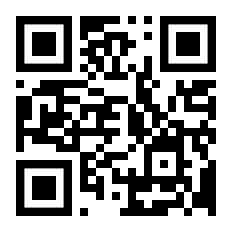

Открытая платформа компьютерного зрения для автоматического контроля средств индивидуальной защиты на производстве. Прозрачно. Локально. Доступно.
🎥 Живое демо →
http://77.105.162.97/
Средние заводы (выручка 400 млн – 5 млрд руб.) обязаны контролировать ношение СИЗ. Штраф Ростехнадзора — до 1 млн рублей. Но существующие решения стоят от 5 до 100 млн руб. и запирают клиента в закрытой экосистеме с облачной подпиской.
Мы даём альтернативу: работающий детектор СИЗ с открытым кодом, который разворачивается на сервере завода, не требует интернета и стоит на порядок дешевле — цену инжиниринга, а не лицензии.
Каска, респиратор/маска, защитные очки, спецодежда, перчатки. Контроль наличия и правильности ношения.
Работает с обычными камерами и тепловизорами. Полная темнота, дым, пыль, туман — не помеха.
Реальный темп без задержек. Docker-контейнер, экспорт в ONNX — интеграция с Macroscop, Линия, Trassir.
Код полностью открыт. Можно аудировать, дорабатывать, не зависеть от вендора. Никаких облаков.
Открытый датасет из реальных цехов — каски, спецодежда, низкий свет. Каждый завод может пополнять его.
200–300 кадров с цеха заказчика — и модель дообучена под конкретные условия. Выезд одного инженера.
| Параметр | Труд-Зрение (мы) | VizorLabs | CAMAI / NEURUS |
|---|---|---|---|
| Стоимость входа | 150–400 тыс. руб. | 500 тыс. – 1,5 млн (пилот) | 150 тыс. – 5 млн руб. |
| Код | Открыт (Apache 2.0) | Закрыт | Закрыт |
| Привязка к облаку | Нет (on‑premise) | Обязательна | Частично / облако |
| Работа в дыму/темноте | Да (ИК + видимый) | Ограниченно | Есть у CAMAI (ИК) |
| Открытый датасет | Да | Нет | Нет |
| Скорость адаптации | ~1 час | Недели / месяцы | Дни / недели |
MVP, открытие репозитория, пилотная площадка (завод-партнёр), сбор первых данных.
Первое коммерческое внедрение, референс, публикация датасета v1.
3+ внедрения, выступление на БИОТ / Металл-Экспо, партнёрство с интеграторами.
Enterprise-сборка, выход в регионы СФО, заявка на грант ФСИ.